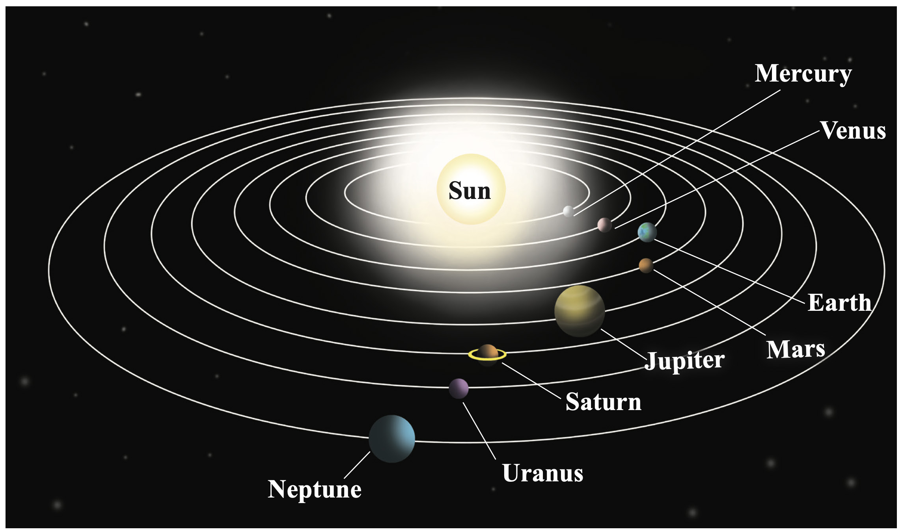

Solar system is composed of a set of different types of planets, moons, asteroids, comets, meteorites, interplanetary dusts and gases. Planets are arranged from the outer gas giants which consist of Jupiter, Saturn, Uranus, and Neptune to the rocky inner planets which comprises of Mercury, Venus, Earth and Mars. The inner planets are smaller, hotter, and solid than the outer planets which are large, cold, and gaseous in nature.
The Earth is the third planet in position from the Sun (Figure 2.2). Making life possible is the distinctive features of planet Earth among other planets in the Solar system. The planet Earth is located about 150 million kilometres from the sun. The Earth supports life due to presence of water. Water exists in three states: liquid, solid, and vapour.
It has an atmosphere which contains different gases such as oxygen, carbon dioxide, hydrogen, nitrogen, and ozone gas. All these gases are essentials for life on Earth. Also, the Earth has important nutrients found in the soil, air, and water, which are essential for living things. Furthermore, the position of the Earth in the Solar system makes its temperature suitable for plants and animals.
Due to this, it is evident that the planet Earth is a unique and precious celestial body in the universe. It is the only known celestial body that supports life. Despite this, still the Earth faces numerous challenges, such as climate change, pollution, deforestation, loss of biodiversity, and overconsumption of natural resources, which are associated with unsustainable human exploitation of resources. Increasingly, the challenges are threatening life on the planet.
